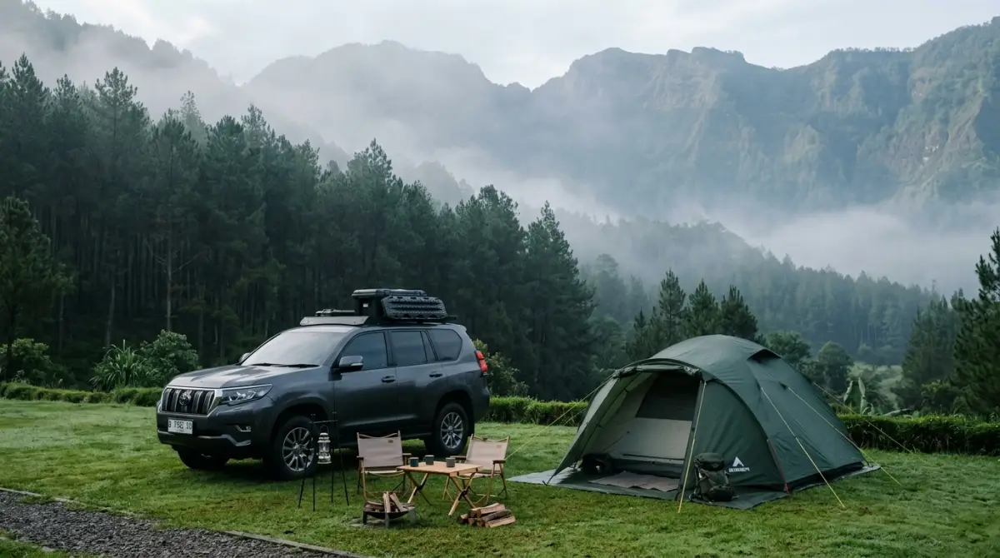
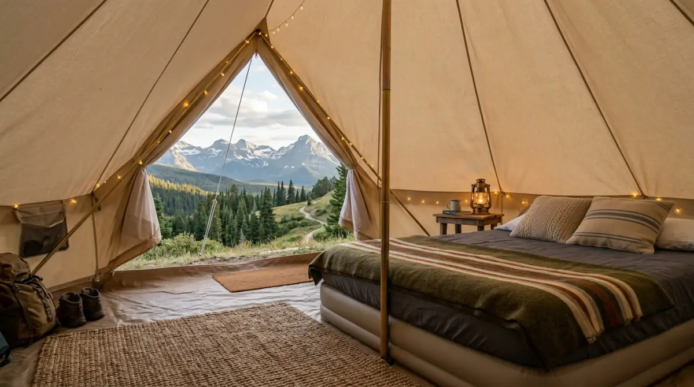

Memilih tempat camping ground yang tepat adalah kunci agar pengalaman pertamamu di alam terbuka menyenangkan dan bebas drama.Pernahkah kamu duduk di meja kantor pada Jumat sore, menatap tumpukan dokumen yang tak kunjung usai, lalu membayangkan betapa nikmatnya menghirup udara pegunungan tanpa gangguan notifikasi WhatsApp? Banyak orang terus menunda rencana "pelarian" ini karena takut repot, takut toilet kotor, atau bingung mencari tempat camping ground yang ramah untuk mobil pribadi.
Jangan sampai tahun ini berlalu begitu saja dan kamu hanya bisa melihat keseruan teman-temanmu lewat Instagram Story. Bayangkan penyesalanmu saat melihat anak-anak tumbuh besar tanpa memori tidur di bawah bintang, atau dirimu sendiri yang semakin stres karena tak pernah benar-benar "lepas" dari hiruk-pikuk kota.
Mumpung akhir pekan depan masih kosong, yuk segera tentukan pilihan. Kamu tidak perlu jadi ahli navigasi atau punya fisik ala tentara untuk menikmati alam; cukup pilih lokasi yang tepat, dan semua kenyamanan rumah bisa tetap kamu rasakan di tengah hutan.
Mengapa Camping Tidak Harus Menjadi Beban?
Mari kita jujur, buat kita yang terbiasa dengan kemudahan hidup di kota besar, ide tidur di atas tanah seringkali terdengar seperti "mencari penyakit". Pikiran kita langsung melayang ke bayangan memanggul tas keril berat sejauh 10 kilometer atau harus buang air di balik semak-semak.
Padahal, saat ini industri wisata luar ruang di Indonesia sudah sangat maju. Banyak tempat camping ground yang didesain sedemikian rupa agar semudah kita melakukan check-in di hotel, namun dengan bonus pemandangan yang tidak bisa dibeli dengan harga kamar tipe suite sekalipun.
Analoginya mirip seperti saat kita pertama kali belajar menggunakan software baru di kantor. Kita tidak perlu langsung menguasai fitur-fitur rumitnya; cukup kuasai dasarnya dulu. Begitu juga dengan berkemah. Untuk pemula, kuncinya adalah mencari lokasi yang memiliki akses kendaraan langsung ke area tenda. Ini krusial karena kamu tidak perlu repot angkut-angkut barang. Semua logistik, mulai dari kompor portabel hingga bantal kesayangan, tinggal diturunkan dari bagasi mobil.
Kriteria Tempat Camping Ground yang Ideal Bagi Pemula
Sebelum kita masuk ke daftar rekomendasi, ada baiknya kamu memahami apa yang membuat sebuah lokasi dikatakan "ramah pemula". Jangan sampai kamu terjebak di lokasi yang ternyata akses jalannya hanya bisa dilalui motor trail atau tidak memiliki sumber air bersih. Sebagai pemula, kamu berhak mendapatkan kenyamanan dasar tanpa mengurangi esensi dari petualangan itu sendiri.
- Akses Kendaraan yang Mumpuni: Pastikan mobil atau motor kamu bisa parkir tepat di sebelah tenda (konsep campervan atau motocamp). Ini memudahkan jika tiba-tiba hujan deras atau jika kamu lupa membawa sesuatu di dalam mobil.
- Fasilitas Toilet dan Sanitasi: Toilet yang bersih dengan pasokan air melimpah adalah harga mati. Poin plus jika pengelola menyediakan air hangat, mengingat suhu pegunungan yang seringkali menusuk tulang.
- Keamanan 24 Jam: Kamu tentu ingin tidur nyenyak tanpa khawatir soal keamanan barang-barang atau gangguan dari orang luar. Pilih tempat yang memiliki penjaga atau staf yang berjaga sepanjang waktu.
- Penyewaan Alat yang Lengkap: Jika kamu belum siap berinvestasi membeli tenda jutaan rupiah, pastikan lokasi tersebut menyewakan peralatan lengkap, mulai dari tenda, matras, hingga lampu penerangan.
Rekomendasi 7 Tempat Camping Ground Terbaik di Indonesia
Berdasarkan pengalaman banyak pelancong dan tinjauan langsung ke lapangan, berikut adalah beberapa titik yang wajib masuk ke dalam daftar rencana liburanmu. Lokasi-lokasi ini dipilih karena konsistensi mereka dalam menjaga kualitas pelayanan dan kemudahan akses bagi mereka yang baru pertama kali ingin "nyemplung" ke dunia luar ruang.
1. Area Pegunungan Jawa Barat (Bogor & Sukabumi)
Kawasan ini adalah kiblatnya tempat camping ground bagi warga Jakarta dan sekitarnya. Dengan waktu tempuh yang relatif singkat, kamu bisa menemukan spot dengan pemandangan Gunung Salak atau Gede Pangrango. Banyak pengelola di sini yang sudah menerapkan standar profesional, di mana area kemah dipisah-pisah per blok sehingga privasimu tetap terjaga.
2. Dataran Tinggi Bandung (Lembang & Ciwidey)
Siapa yang tak kenal pesona Bandung? Di sini, kamu bisa menemukan tempat kemah yang menyatu dengan perkebunan teh atau hutan pinus yang rapi. Akses jalan ke lokasi umumnya sudah beraspal mulus, sehingga mobil city car sekalipun tidak akan kesulitan untuk mencapainya.
3. Kawasan Sejuk di Tawangmangu (Jawa Tengah)
Bergeser ke Jawa Tengah, Tawangmangu menawarkan suasana yang tenang dengan latar belakang Gunung Lawu. Banyak tempat di sini yang menyediakan fasilitas colokan listrik di setiap titik tenda, jadi kamu tidak perlu khawatir baterai ponsel habis saat sedang asyik mendokumentasikan momen.

Memilih tempat camping ground yang ramah pemula dengan fasilitas lengkap akan membuat pengalaman pertamamu di alam terbuka menjadi kenangan yang tak terlupakan.4. Area Pegunungan di Malang dan Batu (Jawa Timur)
Bagi kamu yang berada di Jawa Timur, area Malang dan Batu adalah surga. Ada beberapa spot yang memungkinkan kamu melihat lampu kota (city light) dari ketinggian sambil menyeduh kopi di depan tenda. Pengelolaannya sangat tertib, mirip dengan sistem manajemen gedung di perkantoran yang terorganisir dengan baik.
5. Kawasan Wisata di Yogyakarta (Kulon Progo & Gunungkidul)
Yogyakarta tidak hanya soal Malioboro. Di bagian perbukitan Menoreh atau pantai-pantai di Gunungkidul, terdapat area perkemahan yang sangat terawat. Aksesnya mudah menjangkau jalan utama, namun suasana alaminya tetap terasa kental.
6. Area Perbukitan di Bali (Kintamani & Bedugul)
Bagi yang ingin suasana berbeda, camping di pinggir danau atau dengan pemandangan Gunung Batur di Bali adalah pilihan cerdas. Banyak pengelola di Bali yang mengombinasikan konsep camping dengan estetika yang sangat Instagrammable, cocok untuk kamu yang peduli pada aspek visual.
7. Kawasan Wisata Sumatera Utara (Berastagi & Danau Toba)
Tak kalah dengan Pulau Jawa, di Sumatera Utara terdapat spot-spot menawan yang ramah pemula. Bayangkan bangun tidur langsung disambut oleh hamparan Danau Toba yang megah. Fasilitas pendukung seperti warung makan dan tempat ibadah biasanya tersedia sangat dekat dengan area kemah.
Tips Agar Liburan Pertamamu Sukses Tanpa Drama
Meskipun kamu sudah memilih tempat camping ground dengan fasilitas terbaik, sedikit persiapan tetap diperlukan agar pengalamanmu tidak berantakan. Ibarat presentasi di depan atasan, persiapan yang matang akan membuatmu jauh lebih percaya diri.
Pertama, perhatikan prakiraan cuaca. Di Indonesia, cuaca bisa berubah sangat cepat. Meskipun pengelola menyediakan drainase yang baik, membawa terpal tambahan (flysheet) bisa menjadi penyelamat saat hujan turun tiba-tiba. Kedua, bawa logistik makanan yang praktis. Mi instan memang klasik, tapi membawa daging marinasi untuk dipanggang (barbeque) akan memberikan sensasi mewah di alam bebas.
Ketiga, jangan lupa membawa obat-obatan pribadi dan losion anti nyamuk. Meski fasilitas lengkap, kamu tetap berada di alam bebas yang dihuni oleh berbagai jenis serangga. Terakhir, jadilah tamu yang bertanggung jawab. Prinsip "Leave No Trace" atau tidak meninggalkan jejak sampah harus selalu dijunjung tinggi. Jangan sampai tempat indah yang kita kunjungi rusak hanya karena kelalaian kita dalam mengelola sampah pribadi.
"Hidup ini terlalu singkat jika hanya dihabiskan di dalam kotak beton bernama kantor atau rumah. Menikmati waktu di alam terbuka adalah tentang memberikan kesempatan bagi pikiranmu untuk beristirahat."
— Refleksi untuk Pekerja ModernPenutup: Waktunya Menentukan Tanggal
Hidup ini terlalu singkat jika hanya dihabiskan di dalam kotak beton bernama kantor atau rumah. Menikmati waktu di tempat camping ground bukan hanya soal tidur di dalam tenda, tetapi tentang memberikan kesempatan bagi pikiranmu untuk beristirahat dan mengisi ulang energi yang hilang. Seringkali kita merasa terlalu sibuk untuk berlibur, padahal justru saat kita merasa sibuk itulah kita paling butuh jeda.
Jangan biarkan keraguan menghalangimu. Pilih satu lokasi dari daftar di atas, ajak teman atau keluarga, dan rasakan sendiri betapa segarnya tubuhmu setelah terpapar udara pegunungan yang asli. Kamu tidak akan pernah menyesal telah menyisihkan waktu untuk mendekat kembali ke alam, tetapi kamu mungkin akan menyesal jika terus menundanya sampai waktu dan kesehatan tak lagi memungkinkan. Sampai jumpa di depan api unggun!
FAQ — Tempat Camping Ground Terbaik untuk Pemula